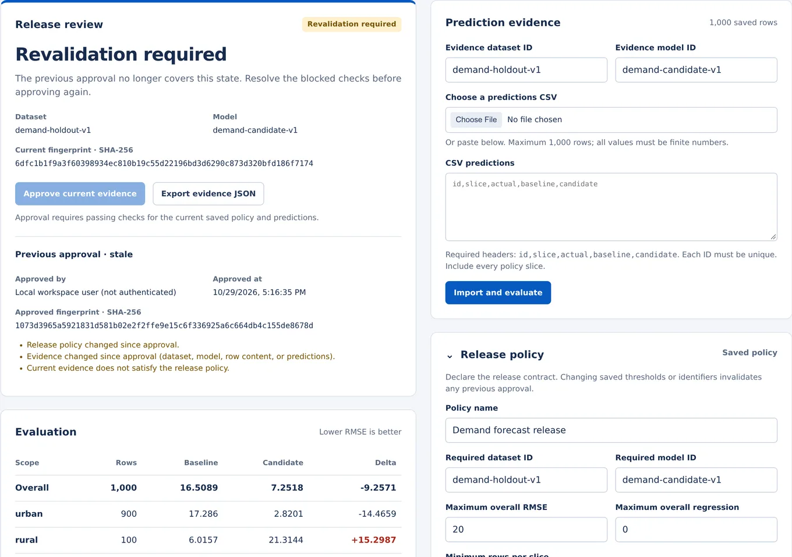
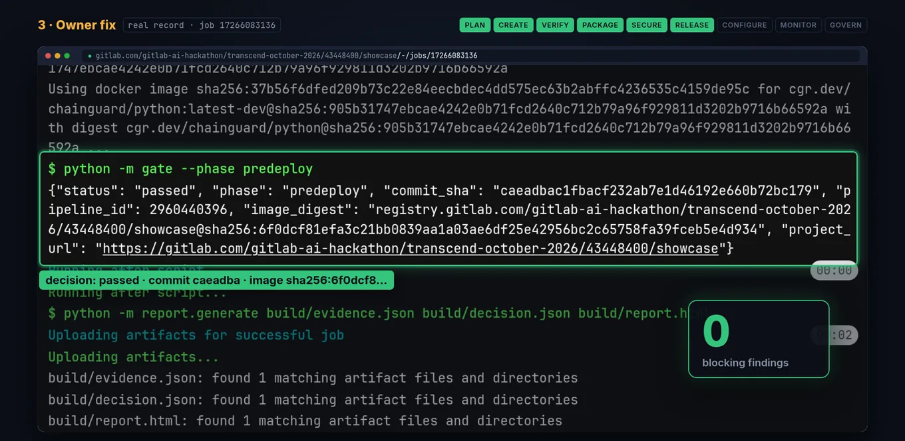
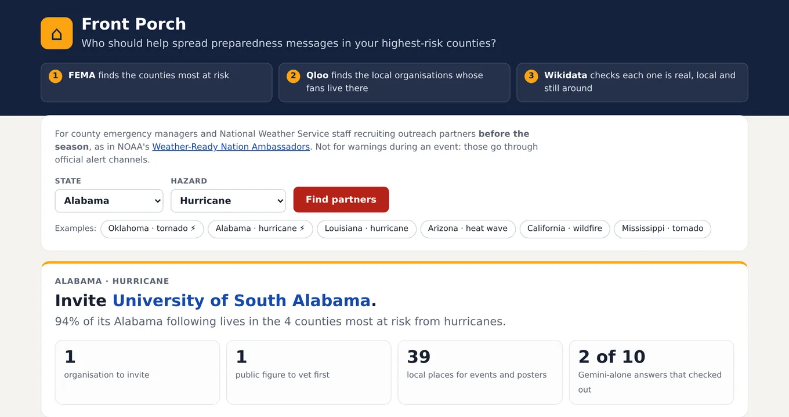

A small software studio. We build focused tools for developer and data teams, and ship them live.
Everything on this page is running today. Try it, watch it, or read the source.
Products
Docs Change Feed for RAG Live on the Apify Store
Watches public documentation sites and emits only the sections that changed since the last run, as clean Markdown ready to re-embed, so a RAG index stays current without re-embedding everything. $2 per 1,000 pages checked.
A release-evidence panel for ML teams. It recomputes baseline and candidate error from the prediction file itself, checks every required slice, and ties approval to the exact policy and evidence reviewed. Change either one and the approval goes stale.

Synthetic demo: overall error drops, but the rural slice regresses, so approval is blocked and the earlier approval is marked stale.
A release gate that ties each release to the exact commit, pipeline, container digest, staging revision and approving human. In its first real run the gate blocked a release on 109 scan findings, and the GitLab Duo agent escalated with a fix plan instead of patching outside its scope.

Real pipeline record: after the owner's fix, the gate passes with zero blocking findings for that exact commit and image digest.
Helps county emergency managers pick who should carry preparedness messages before storm season: local teams, venues and organisations whose audiences live in the highest-risk counties, with every candidate checked against Qloo, FEMA and Wikidata.

Alabama · hurricane: 94% of the recommended partner's Alabama following lives in the four highest-risk counties.